ECAP File Manager is used across companies in Germany including Siemens and Schindler. 30+ workflows, 1,00,000+ users, and four decades of decisions nobody had written down.
Reassign a document to a different record without deleting and re-uploading it.
One consistent error format, per-file results, and metadata split into navigable sections.
Active filter chips, date presets, saved filters, and conditions chained with AND / OR.
Permissions and history readable at a glance instead of a wall of pills.
My role
UX Designer
Timeline
Sept 2025 · Ongoing, across 10–15 releases
Team
5–6 engineers, 2–3 PMs, QA
Tools
Figma, Claude, Miro
An internal audit of the EFiling / File Manager module surfaced the same complaints across roles: the interface looked and behaved like software from another era, and routine document work took more steps than it should.
62%
struggled to navigate the module in their first session
48%
found the UI inconsistent and the data unstructured
55%
needed extra steps to finish a routine task
01
Visual language and interaction patterns had not been revisited in years.
02
Simple intentions were buried under steep, multi-screen paths.
03
Frequent tasks cost more actions than the equivalent in any modern DMS.
04
Table-stakes capabilities competitors shipped years ago were simply absent.
01
Shorten the distance between intent and outcome on the most frequent tasks.
02
Flatten multi-step paths that made routine work feel like a project.
03
Bring the module in line with the rest of ECAP and the SCRIBE design system.
04
Ship the capabilities every comparable DMS already treats as standard.
I ran a competitive scan across OneDrive, Zoho WorkDrive, Box, SharePoint, M-Files, Laserfiche, DocuWare and OpenText, alongside the audit findings. Where every one of them converged on a behaviour, that behaviour was table stakes. The scan produced roughly 25 candidate features, which we then argued down to what could actually ship.
8
document management systems teardown
~25
features proposed from the scan
4
taken into the first release wave
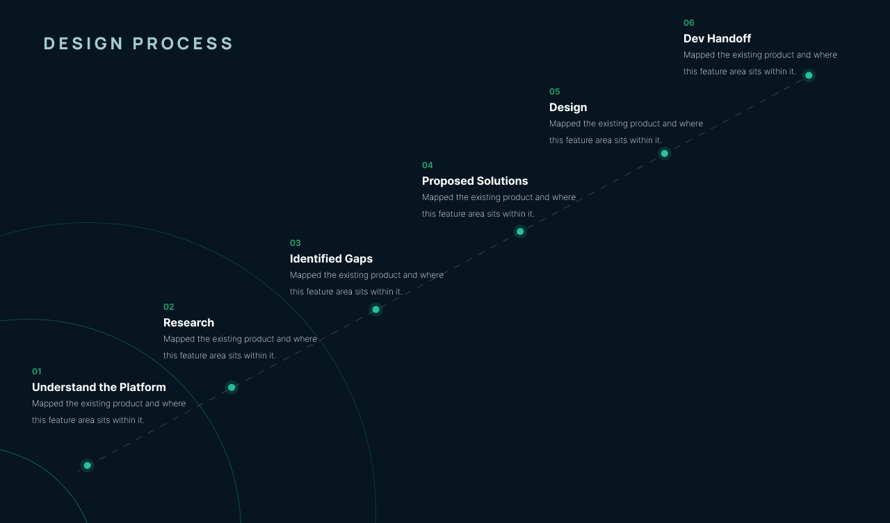
Run per feature rather than once for the whole module.
Four groups rely on EFiling day to day, each pulling on the same file manager for a different reason.
Manages employee records and onboarding documents
Needs audit trails and retention tracking
Handles case files spread across multiple records
Shares proposals and client documents on short notice
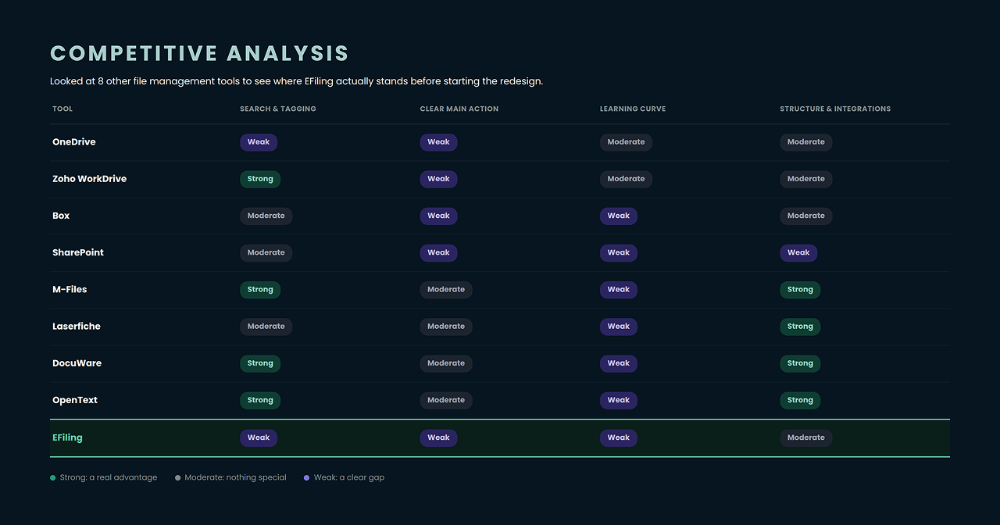
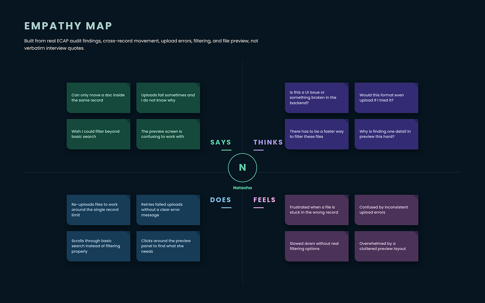
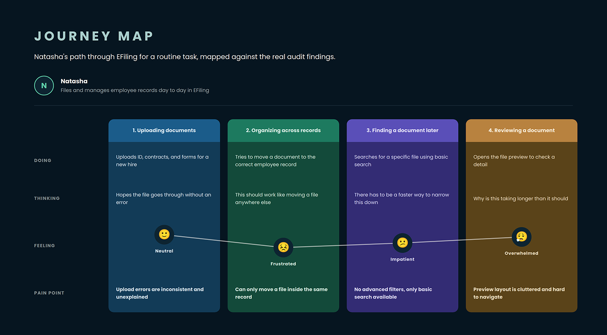
Before proposing anything, I documented the module as it stood: the flow people actually walked, the structure underneath it, and where File Manager sat inside ECAP as a whole.
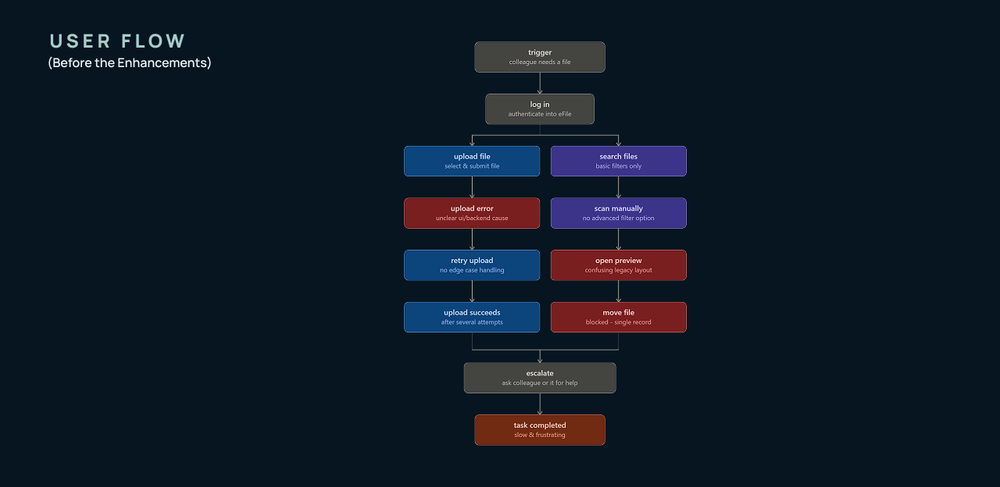
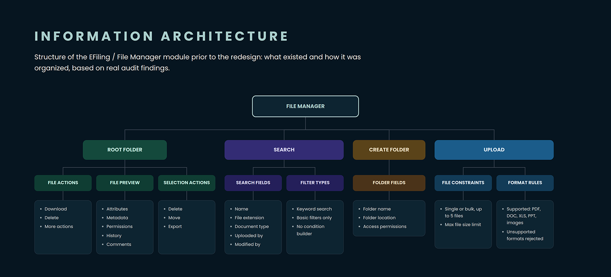
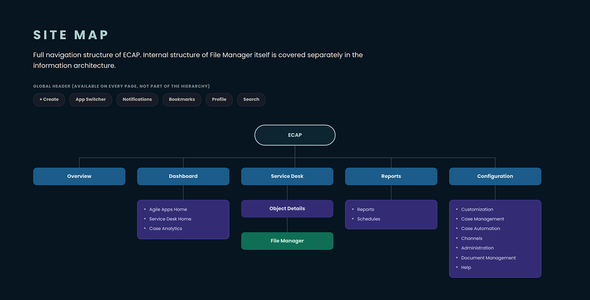
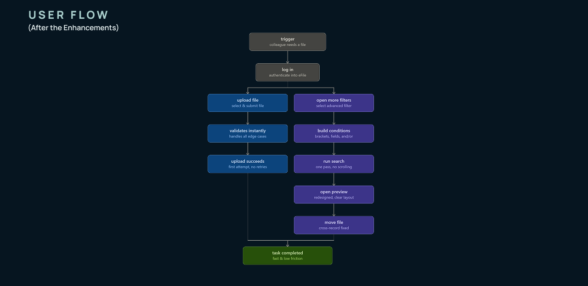
Documents could only be moved within the same record. Reassigning a file to a different employee or case record wasn’t possible without deleting the original and starting over. HR and consultants felt this most, since consolidating documents across related records was routine work for them, not an edge case. The workaround people found on their own: manually re-upload the file into the new record, often losing version history and risking duplicate or orphaned copies along the way.
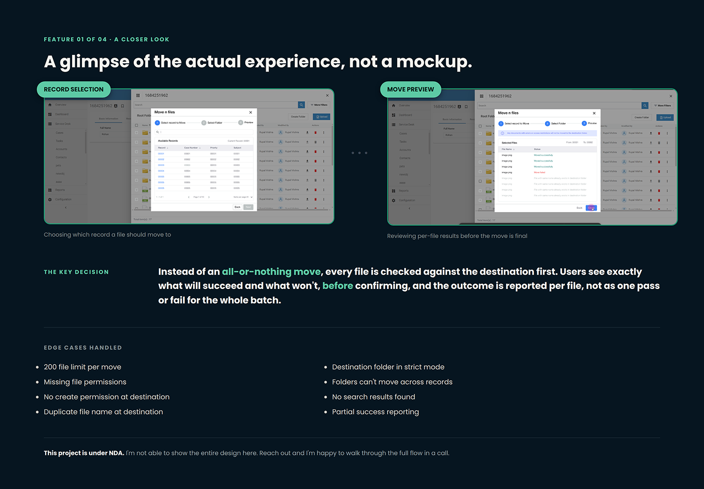
Errors showed up inconsistently depending on what broke: inline messages for UI issues, popups for backend ones, with no single pattern to learn. When uploading multiple files at once, there was no way to see which specific files had actually succeeded or failed, everything just blended together. And once the metadata list got long, it became an infinite scroll with no sense of which section you were currently filling in.
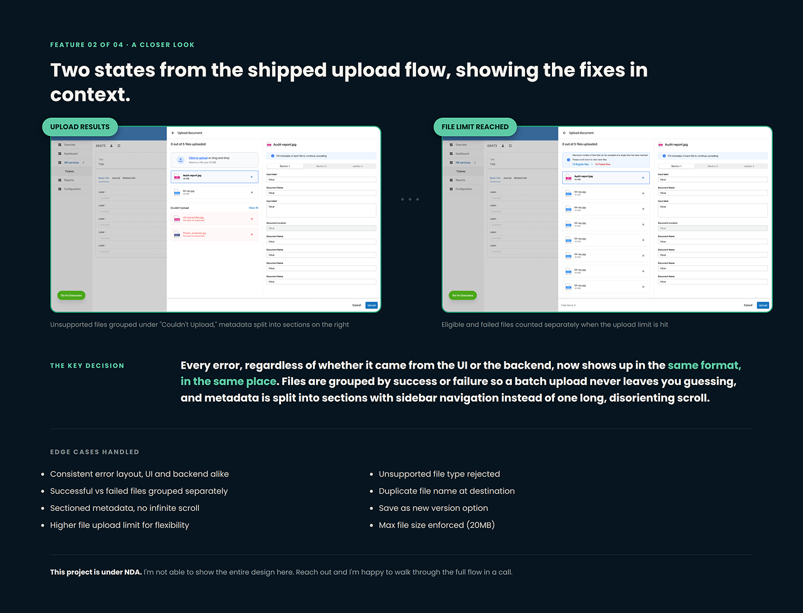
Every DMS we looked at, SharePoint, Box, DocuWare, M-Files, treats a handful of things as table stakes: showing which filters are currently active, a real date picker instead of a vague dropdown, filtering by file type, and saving filter combinations for reuse. EFiling had none of these. Apply a filter, navigate away, come back, and there was no way to tell you weren’t looking at the full file list. Date filtering was a single “Any” dropdown. File extension showed up as a column, but you couldn’t filter by it. And every search only supported simple, one-condition-at-a-time matching, so anything more specific than “find PDFs” meant scrolling through results by hand.
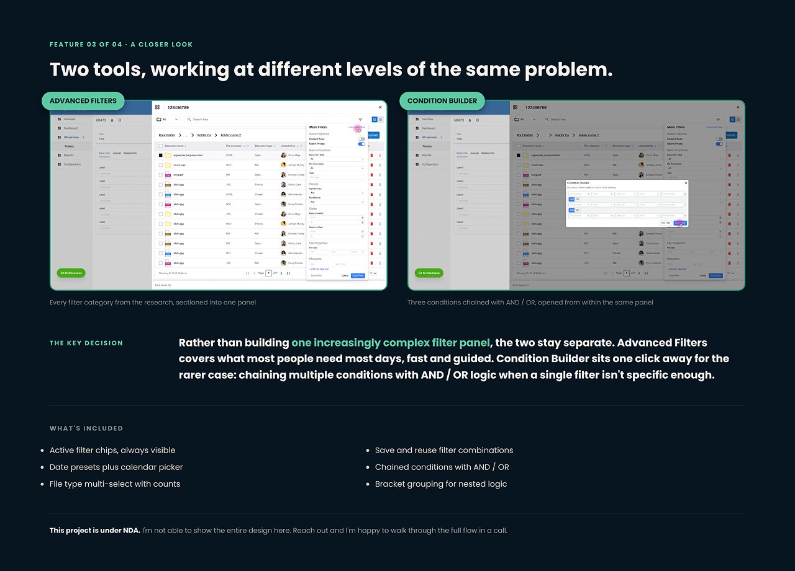
The Permissions tab showed every role and team as a wall of seven colored pills, Delete, Download, Print, View, Grant, Edit, Create, in a different order depending on whether you were looking at a role or a team. There was no quick way to see who could actually do what. Adding a permission meant hunting for a small “+” icon buried in a section header. History had the same root problem: “Filter History” was a single label with no visible criteria until you opened it, and the log itself repeated near-identical entries back to back with no grouping, so three previews of the same file in one evening showed up as three separate lines.
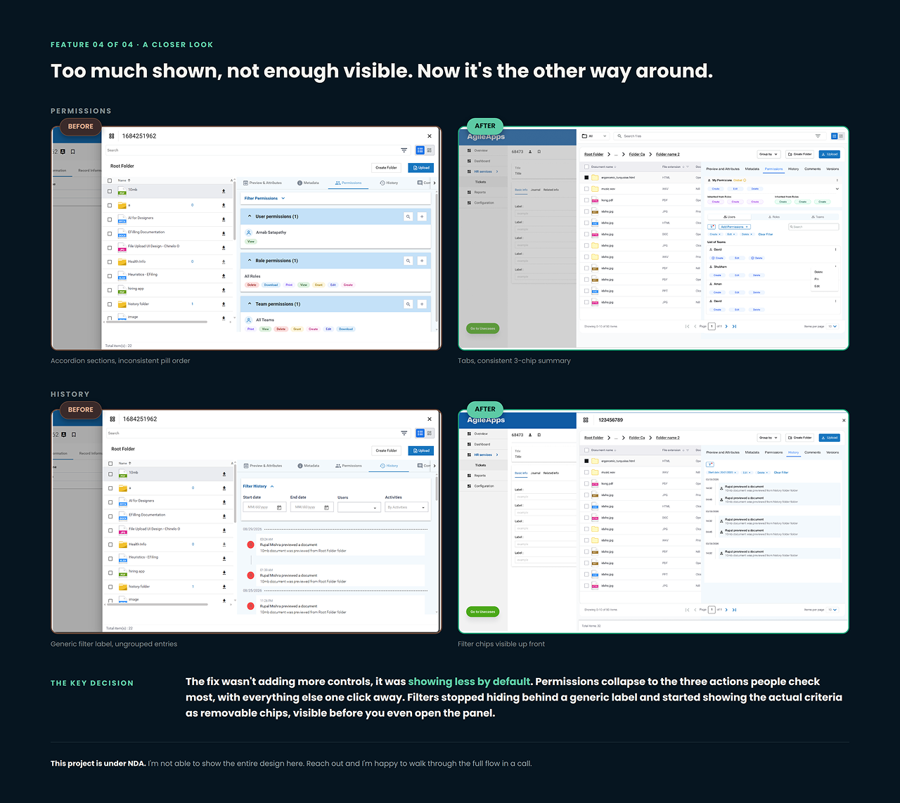
This project is under NDA. The full flows aren’t shown here — happy to walk through them in a call.
Internal reception from the employees who use the module, not measured analytics.
Feels current, not legacy
Moving files feels more flexible
Uploads are finally transparent
Filtering feels genuinely powerful
01
Most of this work meant improving something people already relied on every day, not starting fresh. Every decision had to respect existing habits while still making things better.
02
Working on a live enterprise product with real users, real constraints, and a real engineering team to coordinate with was a different kind of challenge than anything before it.
03
Getting a redesign shipped meant working closely with engineers, PMs, and QA across many releases, not handing off a finished design and moving on.
Next case study